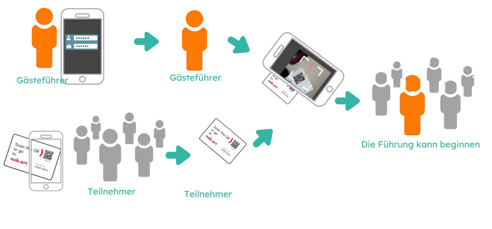

Ersetzen Sie herkömmliche Reiseführer-Tools durch Smartphones.
Sie halten eine Gruppenführung an einem lauten Ort? Oder wo man besonders leise sprechen muss?
Hat Sie der Preis eines herkömmlichen drahtlosen Gruppenführungssystems abgeschreckt?
Nubart® Live ist das, was Sie brauchen. Es ist eine webbasierte Lösung, die problemlos auf den Smartphones der Teilnehmer läuft, ohne dass eine App heruntergeladen werden muss. Nubart Live ist extrem einfach zu bedienen, auch für nicht technikaffine Teilnehmer.
Eine Karte mit einem QR-Code stellt die Verbindung zwischen dem Besucher und dem Guide her. Dessen Smartphone fungiert als Sender, die Smartphones der Besucher als Empfänger. So einfach geht's!
Es gibt eine bessere Art, Gruppen zu führen als mit sperrigen Funkgeräten
Herkömmliche Personenführungsanlagen
- Sperrige Headsets müssen nach jedem Einsatz gereinigt werden
- Teure Geräte zum Kaufen, Mieten oder Warten
- Internationale Gäste fühlen sich ausgeschlossen
- Wenig flexibel für gelegentliche Führungen
- Batterien, Aufladen und Logistik notwendig
Nubart LIVE
- Besucher verwenden das eigene Smartphone: keine Apps, keine Geräte
- Gäste scannen einfach einen Code – ganz ohne Technikstress
- Optionale KI-Übersetzung in über 35 Sprachen
- Stille Fragenfunktion für reibungslosere Führungen
- Einmaliger Kartenkauf, keine Verwaltung von Geräten nötig
Ab 154 € (Einmalkauf, keine Abos)· Alle Preise ansehen →
Wie funktioniert Nubart Live - Grundkonzept

Möchten Sie sehen, wie Nubart LIVE bei Ihren Führungen funktioniert?
Kostenloses Testkit anfordern
Warum jede Person einen eigenen Code erhält
Im Gegensatz zu Systemen mit gemeinsamem QR-Code oder PIN erhält bei Nubart LIVE jede Person einen eigenen, nicht übertragbaren Zugangscode.
Sofort startklar: Kein Gedränge um ein einziges Gerät. Jede Person scannt ihren eigenen Code und ist gleichzeitig verbunden.
Unabhängig und stressfrei: Verbindung verloren? Einfach erneut scannen – ganz ohne Unterbrechung oder Hilfe des Guides.
Volle Kontrolle für den Guide: Nur eingeladene Teilnehmende haben Zugriff. Keine unerwünschten Zuhörer und keine Überschneidungen mit anderen Gruppen.
So einfach wie es nur geht
Wozu eine Gruppenführungsanlage, wenn doch jeder ein Smartphone hat?
Einfach zu bedienen
Sowohl Besucher als auch der Guide scannen den QR-Code auf den Karten. Das war's! Keine Registrierung oder App-Download erforderlich. (Nur der Guide muss sich einloggen).
Erschwinglich
Unser Basispaket mit 500 Karten kostet weniger als das Mieten einer Gruppenführungsanlage und reicht für viele Touren aus.
Anonym
Ihre Besucher müssen keinerlei persönliche Daten angeben, um Nubart Live zu nutzen. Es ist völlig anonym!
KI-Übersetzung
Leiten Sie eine mehrsprachige Gruppe? Kein Problem! Fügen Sie einfach unsere Live-Übersetzungsfunktion hinzu, und alle können unabhängig von ihrer Muttersprache folgen.
Mehr erfahren
Anfragefunktion
Ihre Gäste können jederzeit eine Frage an den Guide stellen, ohne ihn zu unterbrechen: Der Guide kann jederzeit auf die Liste der angesammelten Fragen zugreifen.
So funktioniert's
Leicht zu transportieren
Ein Koffer mit einer Gruppenführungsanlage ist schwer zu tragen und für Diebe attraktiv. Nicht so unsere Karten!
Hygienisch
Gruppenführungsgeräte müssen nach jedem Gebrauch desinfiziert werden. Nicht unsere Karten!
Umweltfreundlich
Geräte erzeugen schädlichen Elektronikmüll. Unsere Karten werden auf FSC-Karton mit CO2-Kompensation gedruckt.
Prüfen Sie Nubart Lives Anwendungsfälle
Anwendungsfälle

Fabrik- und Werksbesichtigungen
Führen Sie Ihre Besucher kostengünstig durch Ihre Fabrikhalle:
In Kombination mit einem unidirektionalen Mikrofon für Smartphones ist Nubart Live ideal für Betriebsbesichtigungen in lärmintensiven Umgebungen.

Stadtführungen
Nubart Live ist ein einfaches und erschwingliches System, um Gruppen durch eine Stadt zu führen:
Die Stimme des Guides übertönt den Verkehrslärm und es spielt keine Rolle, wie weit entfernt die Teilnehmer sind.

Zugänglichkeit für Schwerhörige
Nubart Live hilft Ihnen, Ihre Führungen inklusiver zu gestalten: Die Verwendung von Kopfhörern auf einem Smartphone bietet ein viel besseres Hörerlebnis für Menschen mit Hörschwierigkeiten (keine Störung durch Hintergrundgeräusche, Anpassung der Lautstärke, etc.)
Ideal für Fabrik- und Werksbesichtigungen
Effiziente Kommunikation bei Werkführungen – auch in lauter Produktionsumgebung
Laute Produktionsumgebungen erschweren eine klare Verständigung bei Werksbesichtigungen erheblich. Herkömmliche Funkführungsanlagen sind teuer in Anschaffung oder Miete, wartungsintensiv und für mehrsprachige Gruppen nur eingeschränkt geeignet.
Warum sich Industriebetriebe für Nubart LIVE entscheiden:
- Fortschrittliche Geräuschunterdrückung – Kristallklarer Klang selbst in lauten Produktionshallen dank unidirektionalem USB-Mikrofon
- Mitarbeiterschulung und Onboarding – Schulen Sie internationale Mitarbeitende in ihrer Muttersprache, ohne zusätzliche Hardware
- Diskretion für VIP-Besucher – Anonyme Teilnahme per Smartphone, ideal für vertrauliche Werksführungen
- Flexible Nutzung ohne Investitionskosten – Perfekt für gelegentliche Investorenbesuche oder Kundentermine, ohne tägliche Systemmiete
Typische Einsatzbereiche in Fabriken und Industrieunternehmen:
- Werksbesichtigungen für Investoren und Stakeholder
- Einführung und Sicherheitsschulungen für neue Mitarbeitende
- Kunden- und Partnerbesuche in der Produktion
- Produktdemonstrationen auf Messen oder am Messestand

Planen Sie Werksbesichtigungen?
Fordern Sie ein kostenloses Testkit an und testen Sie Nubart LIVE direkt in Ihrer Produktionsumgebung.
Kostenloses Testkit anfordernAdd-on für AI-generierte Simultanübersetzung
Optionale KI-gestützte Simultanübersetzung

Führen Sie Touren mit internationalen Besuchern durch? Mit unserem optionalen KI-Add-on kann ein einziger Guide nun eine mehrsprachige Gruppe betreuen, ohne Dolmetscher zu benötigen.
Unser optionales KI-Übersetzungs-Add-on funktioniert nahtlos mit Nubart LIVE:
- Die Teilnehmer scannen ihren QR-Code und wählen ihre bevorzugte Sprache aus 35+ Optionen
- Sie können in der Originalsprache zuhören, um die natürliche Stimme des Guides zu hören
- Oder eine KI-Echtzeit-Übersetzung erhalten als Text und Audio auf ihrem Bildschirm
- Fragen werden automatisch übersetzt, wenn Teilnehmer in ihrer eigenen Sprache schreiben
Eine Tour. Mehrere Sprachen. Keine zusätzlichen Guides erforderlich.
Demo von Nubart LIVE mit KI-Übersetzungs-Add-on
Spielen Sie das Video mit Ton ab!
Preise & Kostenrechner
Einfache, transparente Preise. Erstellen Sie Ihr Angebot in wenigen Sekunden.
QR-Code-Karten
Einmalkauf · unbegrenzte Guides · keine Abonnements

PDF · ausdrucken & verwenden
Lieferung in max. 1 Tag
+ €1,50/Code · min. 50

500 vorgedruckte Karten aus Karton
Versand in 2–3 Tagen

3.000+ Karten · Ihr Design
Versand in 30 Tagen
Mengenrabatte
KI-Übersetzungs-Add-on
- Über 35 Sprachen, Audio & Text in Echtzeit
- Preis pro Guide-Stream, nicht pro Sprache
- Unbegrenzte Zuhörer — keine Kosten pro Besucher
- Wird nur berechnet, während der Guide mit aktiver Übersetzung spricht
- Guide kann jederzeit aktivieren/deaktivieren
Mediathek
Der Guide sendet Multimediadateien per Fernsteuerung auf die Bildschirme der Teilnehmer. Eine Mediathek pro Route.
Ihre Kostenschätzung
Erstellen Sie Ihr Nubart LIVE Angebot in wenigen Klicks
Schritt 1 von 4
Welches Kartenpaket benötigen Sie?
Schritt 2 von 4
Benötigen Sie eine Mediathek?
Eine Mediathek ermöglicht es dem Guide, Bilder, Videos oder Dokumente während der Tour per Fernsteuerung auf die Bildschirme der Teilnehmer zu senden. Sie können für jede Route eine eigene Mediathek erstellen.
Schritt 3 von 4
Benötigen Sie das KI-Übersetzungs-Add-on?
Echtzeit-Übersetzung in über 35 Sprachen. €39 pro Stream-Stunde (pro Guide mit aktiver Übersetzung).
Ist dies das erste Mal, dass Sie die KI-Übersetzung von Nubart LIVE nutzen?
Ihre Schätzung
Kostenübersicht
Ihre Angebotsanfrage ist fertig
Kopieren Sie den Text unten und fügen Sie ihn in Ihren E-Mail-Client ein, oder verwenden Sie den Button In Mail-App öffnen, falls eine konfiguriert ist.
Fragen an den Guide? Kein Problem
Die meisten Standard-Gruppenführungssysteme (Geräte) ermöglichen es den Gästen nicht, Fragen zu stellen.
Andere verfügen über eine Talkback-Funktion, mit der der Gast eine Frage an die gesamte Gruppe stellen kann. Schüchterne Teilnehmer halten sich da eher zurück, während die Wagemutigsten manchmal den Guide mit endlosen Fragen unterbrechen und so die gesamte Erfahrung beeinträchtigen.
Nubart Live bietet eine nicht-invasive Lösung, bei der die Fragen auf dem Smartphone des Guides gesammelt werden, so dass er sie zum richtigen Zeitpunkt beantworten kann.
Wenn Sie das Modul für Simultanübersetzung erworben haben, werden die Fragen automatisch übersetzt.
Teilnehmer

Guide

Unsere Kunden und Partner


Häufig gestellte Fragen
FAQ
Erste Schritte
Während der Tour
Wenn Sie eine Gruppe als Guide eröffnen, empfehlen wir Ihnen, einige zusätzliche Karten zu scannen, für den Fall, dass jemand zu spät kommt.
In diesem Fall übergeben Sie dem verspäteten Teilnehmer einfach eine der bereits gescannten Karten. Das ist alles – er kann sich sofort der Gruppe anschließen.
Sobald Sie die Gruppe schließen, können Sie diese zusätzlichen Karten für die nächste Tour wiederverwenden. Karten verlieren die Übertragbarkeit erst, wenn die Teilnehmer sie selbst scannen, nicht wenn der Guide sie scannt.
Die Latenz wird durch die Leistung des Smartphones, die Verbindungsqualität und den Mobilfunkanbieter.
Wenn der Guide jedoch mit leiser Stimme spricht, ist die Latenz kaum wahrnehmbar – die Teilnehmer hören in erster Linie die verstärkte Stimme aus ihrem Smartphone und nicht das Echo der natürlichen Stimme des Guides.
Die Gruppe bleibt verbunden. Wenn Sie den Anruf beendet haben, kehren Sie zum Browser zurück. Wenn bei einigen Teilnehmern statt grün ein rotes Licht angezeigt wird, tippen Sie auf "Neu laden" – alle werden wieder verbunden, ohne dass sie ihre QR-Codes erneut scannen müssen.
Hinweis: Wenn Sie unter Android vergessen, vor der Annahme stumm zu schalten, können die Teilnehmer möglicherweise Ihre Seite des Gesprächs hören. Auf dem iPhone hören sie nichts.
Weitere Informationen zur Verwendung von Nubart LIVE auf Gruppenreisen.
KI-Übersetzungs-Add-on
Weitere Informationen finden Sie in unserer Anleitung.
In der Praxis scheitern solche improvisierten Lösungen auf vorhersehbare Weise. Die Übersetzung erfolgt abwechselnd: Der Guide spricht, wartet, und die App gibt die Übersetzung wieder — jede Erklärung dauert dadurch doppelt so lange. Es kann immer nur eine Zielsprache ausgegeben werden, gemischte internationale Gruppen sind damit unmöglich. Läuft die Wiedergabe über einen Lautsprecher, konkurriert sie mit dem Umgebungslärm und ist für Unbeteiligte hörbar — in vertraulichen Produktionsbereichen ein echtes Problem. Und wenn jeder Besucher seine eigene App bedient, hört jeder eine andere Übersetzung zu einem anderen Zeitpunkt, ohne jede Synchronisation in der Gruppe.
Nubart LIVE ist genau für dieses Szenario gebaut. Der Guide spricht einmal in sein Smartphone; alle Teilnehmer empfangen denselben Live-Audiostream synchron auf dem eigenen Handy, über die eigenen Kopfhörer — ohne App-Download, ohne gemeinsamen Lautsprecher. Mit der optionalen KI-Simultanübersetzung wählt jeder Teilnehmer seine eigene Sprache und hört eine kontinuierlich übersetzte Tonspur, während der Guide ohne Pausen weiterspricht. Teilnehmer können dem Guide sogar schriftliche Fragen stellen, die automatisch in seine Sprache übersetzt werden.
Übersetzungs-Apps für Endverbraucher sind hervorragend, um im Urlaub nach dem Weg zu fragen. Dreißig Personen in fünf Sprachen durch eine laute Werkshalle zu führen ist eine andere Aufgabe — und sie erfordert ein System, das dafür entwickelt wurde.
Technische Details
Dies hat jedoch hat dies keine Auswirkungen auf die Gruppenmitglieder: Für sie ist die Akkubelastung nicht viel höher als beim Anhören eines Podcasts oder eines Hörbuchs. Beispielsweise verbraucht eine Stunde Dauerbetrieb 8 % des Akkus eines vier Jahre alten Android-Smartphones.
Nubart LIVE funktioniert mit jedem handelsüblichen Hotspot-Gerät und jeder SIM-Karte – Sie sind frei, die Hardware und den Datentarif zu wählen, der am besten zu Ihrem Budget und Reiseziel passt. Dieser Ansatz ist besonders nützlich, wenn Ihre Gruppe internationale Besucher umfasst, für die Roaming-Gebühren anfallen könnten, wenn Touren in Gebieten mit schlechter Netzabdeckung stattfinden oder wenn Sie schlicht eine zuverlässige Verbindung unabhängig vom Mobilfunkanbieter oder Tarif der Teilnehmer sicherstellen möchten.
Wenn Sie mehrtägige Touren oder große Gruppen mit aktiver Übersetzung planen, empfehlen wir Ihnen, Ihren Datentarif entsprechend zu dimensionieren – oder einfach eine Flatrate-Option zu wählen, die in der Regel nur wenige Euro mehr kostet und jede Sorge über einen vorzeitigen Datenverbrauch während der Tour ausschließt.
Karten
Sie senden uns die Bilder, Logos und anderen Elemente, die Sie auf Ihrer Karte haben möchten, und unser Designer erstellt mehrere Designvorschläge, aus denen Sie auswählen können.
Informieren Sie sich über unsere Preise für Nubart LIVE
Wenn Sie Ihre Karten lieber individuell gestalten möchten, beträgt die Mindestbestellmenge 3.000 Stück. Informieren Sie sich über unsere Preise für Nubart LIVE
Kein Engpass zu Tourbeginn: Statt 25 Personen, die sich anstellen, um einen kleinen Handybildschirm zu scannen, scannt jeder Teilnehmer selbstständig seine eigene Karte. Der Guide kann die Karten sogar vorab einscannen, bevor er sie ausgibt, und die Gruppe so im Voraus zusammenstellen.
Sitzungswiederherstellung: Touristen verlassen ihren Browser ständig, um Fotos zu machen, Nachrichten zu checken oder andere Apps zu nutzen. Bei einem gemeinsamen digitalen Code verlieren sie die Verbindung und müssen den Guide unterbrechen. Mit einer Nubart LIVE-Karte scannen sie einfach erneut und sind sofort wieder dabei – ohne Hilfe des Guides.
Zugangskontrolle: Im Gegensatz zu Systemen, bei denen jeder, der eine PIN kennt oder einen QR-Code sieht, beitreten kann, gibt Nubart LIVE dem Guide die volle Kontrolle darüber, wer in der Gruppe ist. Keine ungebetenen Zuhörer, keine Verwechslungen zwischen überlappenden Reisegruppen am selben Ort.
Benötigen Sie eine kartenfreie Option für spontane oder einmalige Veranstaltungen? Fragen Sie uns nach unseren druckbaren QR-Code-Blättern – dieselben einzigartigen Codes, in Minuten bereit.
Preise
Bereit, Ihre Gruppenführungen zu transformieren?
Testen Sie Nubart LIVE risikofrei. Erhalten Sie ein Testkit mit 30 Minuten kostenloser KI-Übersetzung.
Kostenloses Testkit anfordernKeine Kreditkarte erforderlich Volle Unterstützung während des Tests